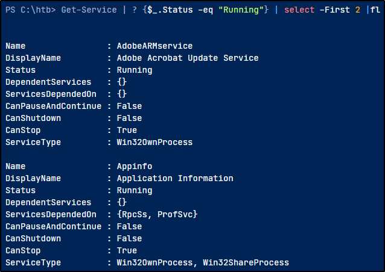

You can use the sc.exe command too!

Windows has 3 type of precesses:- Local Services
- Network Services
- System Services
Sevices can be created, modified and deleted ONLY by users with Administrative Privileges
In Windows there are some system critical services:
those cannot be stopped or restarted without a system restart
https://docs.microsoft.com/en-us/windows/win32/rstmgr/critical-system-services
List of all services here:
https://en.wikipedia.org/wiki/List_of_Microsoft_Windows_components#Services